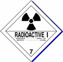
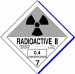
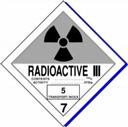
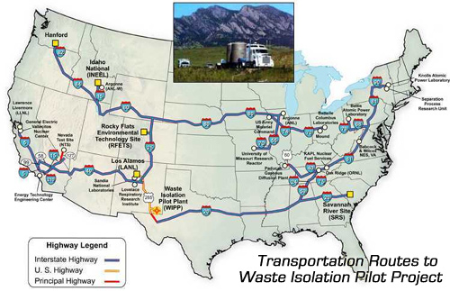
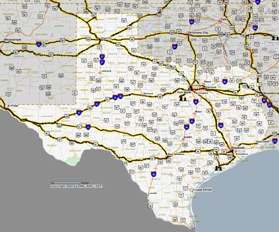

|    |
|  |
|
• The Comanche Peak and South Texas Project reactors in Texas will still have 1,637 and
1,307 metric tons of high level nuclear waste on-site when the Yucca Mountain Project is
completed.
• When the Yucca Mountain Project is completed there will be roughly the same amount of high level nuclear waste at power plants across the country as there is today. • The only reactors that will get rid of their waste completely, according to the Department of Energy, are those that are closed today. • High-level nuclear waste in Texas now - 1,141 metric tons. High-level nuclear waste in Texas if Yucca Mt. Project proceeds to completion - 2,944 metric tons. |
|
• By truck: 8,411 truck shipments over 38 years or an average of 234 truck shipments a year. 69 percent of these shipments (5,798) will come from outside of Texas. • By rail: 12,570 train shipments over 38 years or an average of 349 train shipments a year. 96 percent of these shipments (12,111) will come from outside of Texas. |
|
• 2,336,290 people live within 1 mile of the Department of Energy's proposed high level nuclear
waste transportation routes. 8,003,276 people live within 5 miles.
• 599 schools are within 1 mile of the Department of Energy's proposed high level nuclear waste transportation routes. 1,414 schools are within 5 miles. • 76 hospitals are within 1 mile of the Department of Energy's proposed high level nuclear waste transportation routes. 142 hospitals are within 5 miles. |
|
• There are 60,000 tractor-trailer wrecks on interstates each year, 3,300 of these involve
rollovers.
• In Texas there were 2,391 fatal semi-truck wrecks from 1994 through 2001, 577 occurred on interstates. • There were 9,051 train wrecks in Texas from 1990 through 2001 including 2,427 derailments and 399 collisions. |
|
• In the event of an accident where radiation is leaking, first responders, local police, fire and
hazardous materials response teams could easily be exposed to lethal does of radiation.
Independent analysis of the health and economic impacts of an attack with common military
demolition devices could cause 300 to 1,800 latent cancer deaths and cleanup and recovery
costs of $10 billion or more.
• Three-quarters of all firefighters in the United States are volunteers. These men and women are being offered voluntary radiation training, but it is extremely unlikely that the nations' 2 million first responders will be properly trained and equipped to respond to a serious leak of high level radiation from a transportation wreck or a terrorist incident. |
|
Transportation routes for Yucca Mountain Over Texas Highways  |